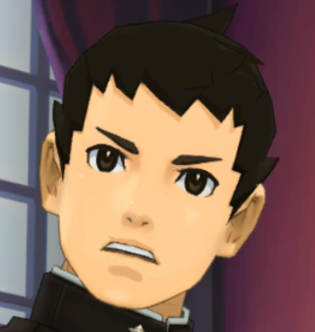

Lab 15 - Fancy CSS 1
Challenge
The challenge of this lab is to understand and experiment with more CSS. We will try to use new words and create a html files styled in this new CSS.
Problems
Site css was overriding some changes i tried to make so I had to be more specific in my lab.css.
Result
After very few problems, the results of the lab are the text having shadows, the container having rounded edges, and the image having a filter, object-fit, and transform. I also gave the body a gradient color.
